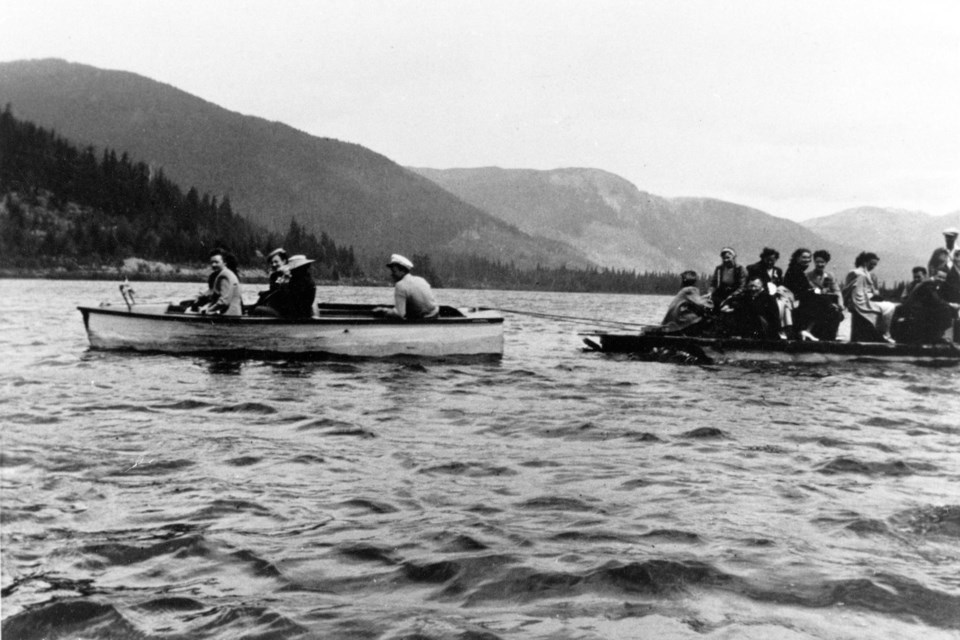

Founded in 1985, White Water Rafting Adventures began with a simple dream: to share the thrill and beauty of our local rivers with adventure seekers from around the world. What started as a small family operation with just two rafts has grown into one of the premier rafting companies in the region.
Our founder, John Rivers, was a river guide who fell in love with the untamed waters of the Colorado River. With over 40 years of experience navigating these waters, our team has built a reputation for safety, excitement, and unforgettable experiences. We've guided over 100,000 adventurers through rapids ranging from gentle Class II floats to heart-pounding Class V expeditions.
Today, we continue to honor our commitment to providing exceptional river experiences while maintaining the highest safety standards and environmental stewardship. Our guides are certified professionals who are passionate about sharing their knowledge of the river ecosystem and local history.